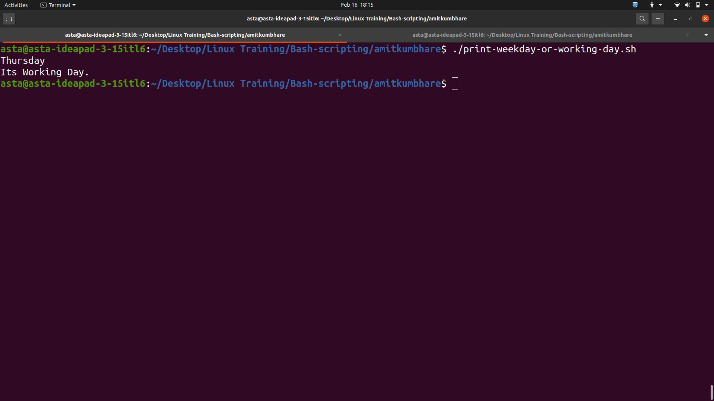

Weekday or Weekend
This script checks today's date and day and gives output accordingly.
Script:
#!/bin/bash
date +'%A'
day=`date +'%A'`
if [ "$day" == Sunday ]
then
echo "Its still Week-End."
elif [ "$day" == Saturday ]
then
echo "Week-End stated."
else
echo "Its Working Day."
fi
Explanation:
- The first line (#!/bin/bash) is called the shebang line. It specifies the interpreter to be used to execute the script, in this case, it's the bash shell.
- The second line uses the date command with the +%A format option to print the current day of the week in the long format (e.g. "Monday", "Tuesday", etc.).
- The third line stores the day of the week in the day variable.
- The if-elif-else statement starting from the fourth line checks the value of the day variable to determine whether it is a working day or a weekend.
- If the value of day is "Sunday", the script prints "Its still Week-End."
- If the value of day is "Saturday", the script prints "Week-End stated."
- If the value of day is any other day of the week, the script prints "Its Working Day."
The output of the script is displayed in the terminal.
